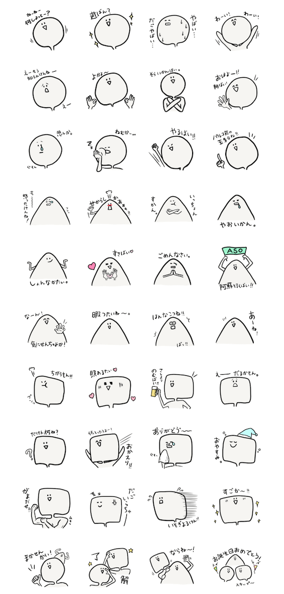

YUIKO HAMADA'sportfolio site


テーマを地元の熊本県にしたLINEスタンプを制作・販売。方言スタンプにすることで市場を絞りました。当時販売されていた熊本弁スタンプが、日常あまり使わない方言のものが多かったため、実際に自分が使う方言を盛り込んだものを制作しました。
構想を練り始めたのは2014年7月頃。LINEスタンプ市場がぐんぐん伸びていた時期です。そこから2ヶ月くらい案出しをしたり、ラフを描いたりして9月末に一気に仕上げました。
モチーフを図形にしたのは、動物モチーフだとすぐに埋もれてしまうし、熊本に関するものだとありきたりだし、何かもっとよく分からない生き物っぽいのにしよう。と思い、まる・さんかく・しかくのキャラを描いてみました。（知人に何種類かキャラがあった方が良いと言われたのもあって、統一感があり、かつバリエーションがつけれる何かないかなと思い、図形のまる・さんかく・しかくを選びました。）
こだわったのは、とにかく使える方言にすること。地元の人でもわからないような方言は、スタンプとしては使いにくいと考えたからです。
販売開始してからは、地元の人はもちろんそうじゃない人にも使って頂けてとても嬉しかったです。
ちなみに一番ローカルネタで気に入ってるのは、お誕生日おめでとう！(スナップ〜)です。
